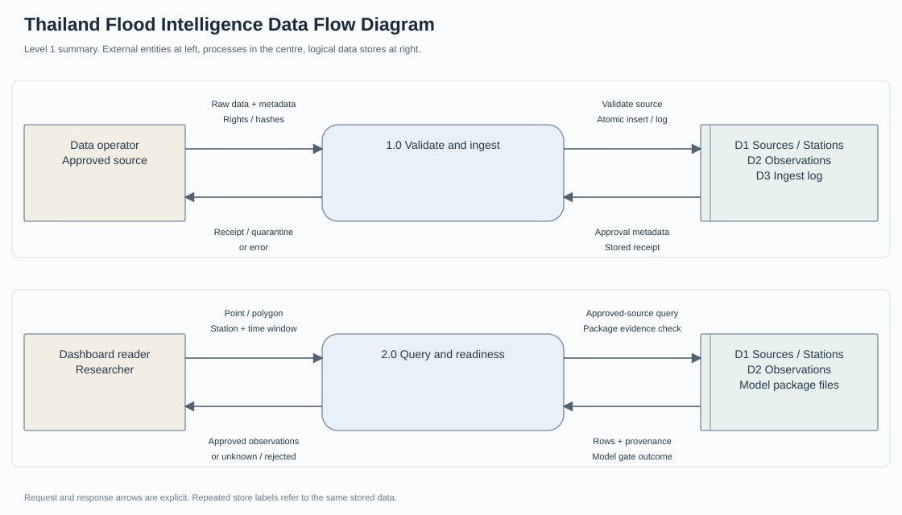

โครงการระหว่างพัฒนา · 2026
Thailand Flood Intelligence
แพลตฟอร์มวิจัยสถานการณ์น้ำ แยก Public Dashboard และ Research API พร้อมแหล่งที่มาของข้อมูล
บทบาท / สิ่งที่ทำ
ออกแบบขอบเขตข้อมูล การแสดงผลบนแผนที่ และเงื่อนไขตรวจสอบข้อมูลก่อนนำเสนอ
ขอบเขตที่นำเสนอ
- Map / GeoJSON
- Historical Water Levels
- Data Provenance
- Research API
- Readiness Status
เครื่องมือและวิธีการ
ผลลัพธ์ / สิ่งที่ส่งมอบ
รุ่น v0.6 มีเครื่องมือแผนที่ นำเข้าข้อมูลย้อนหลัง และเอกสารตรวจความพร้อม
ขอบเขตและสถานะ
ยังไม่มีผลจำลองน้ำท่วมที่ผ่านการรับรอง ไม่มีข้อมูลระดับน้ำสด และยังไม่มี Hosted Deployment
Data Flow และเอกสารวิเคราะห์

เอกสารใหม่จาก source baseline พร้อม Requirement, Workflow, Data Model และ UAT ที่ระบุสถานะตามจริง
กระบวนการของโครงการ
- ข้อมูลที่มีสิทธิ์ใช้
- ตรวจคุณภาพ
- PostGIS
- API
- แผนที่ / Dashboard